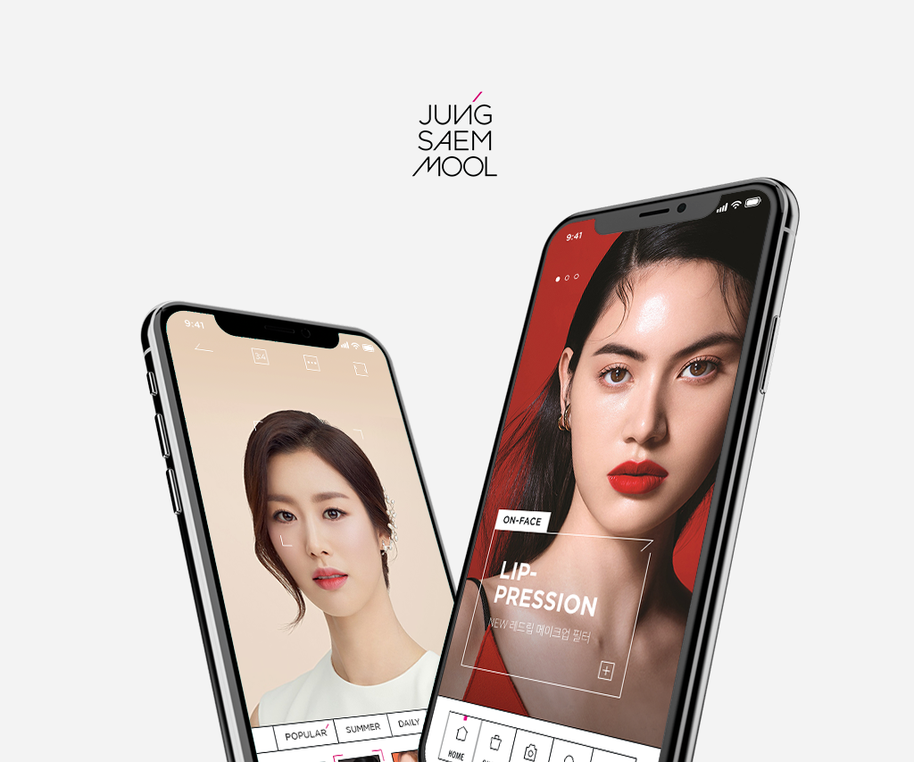

DESIGN SYSTEM 01-
STRATEGY

기존 정샘물뷰티 스토어 어플에서는 메이크업 제품, 튜토리얼 등 컨텐츠들이 있으나 연계성이 약해 소비자들이 각각 찾아야 했습니다.이번 리뉴얼하는 정샘물뷰티는 튜토리얼에서 보던 전문가의 메이크업을 카메라 필터를 통해 가상으로 자신의 얼굴에 시도해볼 수 있고, 이와 관련된 튜토리얼 영상과 제품들의 정보를 얻을 수 있습니다. 카메라 필터기능을 추가함으로써 각 컨텐츠간의 연계성을 높여 소비자들에게 더 쉬운 접근성을 제시합니다.
DESIGN SYSTEM 02-
FLOW CHART

DESIGN SYSTEM 03-
CONCEPT
DESIGN SYSTEM 04-
COLORGRAPHY
전체적으로 정방형의 정사각형이 주는 느낌처럼 깔끔하게 화이트 & 블랙의 구성으로 미니멀하게 색상을 사용하였으며 포인트 부분에만 정샘물뷰티의 핑크 컬러를 사용하였습니다
DESIGN SYSTEM 05-
TYPOGRAPHY
DESIGN SYSTEM 06-
STYLE GUIDE
DESIGN SYSTEM 07-